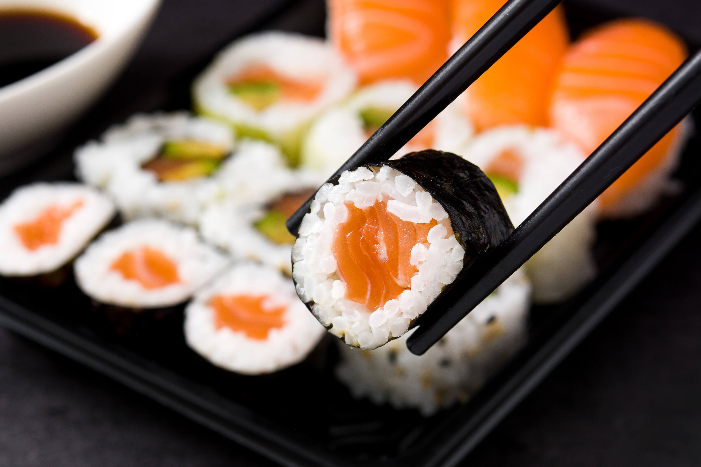

Sushi Bowl
This sushi bowl is a deconstructed version of your favorite sushi rolls, served in a bowl with all of the delicious ingredients layered on top of rice. It's a quick and easy way to enjoy the flavors of sushi without all of the fuss.
Ingredients:
- 2 cups cooked sushi rice
- 4 oz. sushi-grade salmon, cubed
- 4 oz. sushi-grade tuna, cubed
- 1/2 cup sliced cucumber
- 1/2 cup sliced avocado
- 1/4 cup pickled ginger
- 1/4 cup soy sauce
- 1/4 cup rice vinegar
- 2 tbsp. sesame oil
- 1 tsp. honey
- 1 tsp. grated fresh ginger
- 1 tsp. wasabi paste
Instructions:
- In a small bowl, whisk together the soy sauce, rice vinegar, sesame oil, honey, grated ginger, and wasabi paste.
- Divide the cooked rice between two bowls. Top with the salmon, tuna, cucumber, and avocado. Drizzle with the soy sauce mixture and sprinkle with pickled ginger.
- Serve immediately.

Burger
A classic burger recipe that is juicy, flavorful, and easy to make. This burger is made with a beef patty seasoned with salt and pepper, cooked to perfection on the grill or stovetop, and topped with your favorite toppings.
Ingredients:
- 1 lb. ground beef
- 1 tsp. salt
- 1/2 tsp. black pepper
- 4 hamburger buns
- Lettuce
- Tomato
- Onion
- Cheese (optional)
- Ketchup
- Mustard
- Mayonnaise
- Pickles (optional)
Instructions:
- Preheat grill or stovetop to medium-high heat.
- In a mixing bowl, combine ground beef, salt, and black pepper. Mix well to combine.
- Divide the meat mixture into four equal parts and shape into patties.
- Grill or cook patties on stovetop, flipping once, until cooked to your desired doneness.
- Place lettuce, tomato, onion, and cheese (if using) on the bottom half of the hamburger bun. Place the cooked patty on top.
- Add ketchup, mustard, mayonnaise, and pickles (if using) to taste.
- Top with the other half of the hamburger bun and serve.